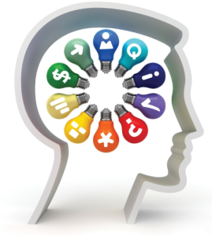

Una persona que brinda soporte técnico no solo debe tener conocimientos sobre su trabajo, también debe saber como tratar a las personas que le brindará su servicio, teniendo una buena actitud ya que de esta forma hará sentir al cliente más cómodo y satisfecho con su trabajo. A continuación podrás ver algunos de los atributos universales del servicio que debemos tener en cuenta y una explicación de que consiste cada uno
1.- Deseo de servir:
Es el deseo interior que tenemos de ser útil, de beneficiar a los demás y sobre todo tener voluntad de ayudar con nuestro trabajo. Al servir obtenemos beneficios haciendo el bien a las demás personas por muy pequeño que sea, y sin duda disfrutaras más tu trabajo.
2.- Responsabilidad:
Es un valor que está en la conciencia de la persona, que le permite reflexionar, administrar, orientar y valorar las consecuencias de sus actos, siempre en el plano de lo moral. Ser responsable implica el cumplimiento de nuestras obligaciones.
3.- Conocimientos:
El conocimiento se conoce con hechos, o datos de información adquiridos por una persona a través de la experiencia o la educación, la compresión teórica o practica de un asunto u objeto de la realidad.
4.- Dedicación:
Entrega intensa a una actividad determinada, aplicando todo el esfuerzo y empeño en un objetivo. Una persona dedicada a lo que hace es aquella que lo desempeña con amor y esmero. También se utiliza como sinónimo de valor u osadía.